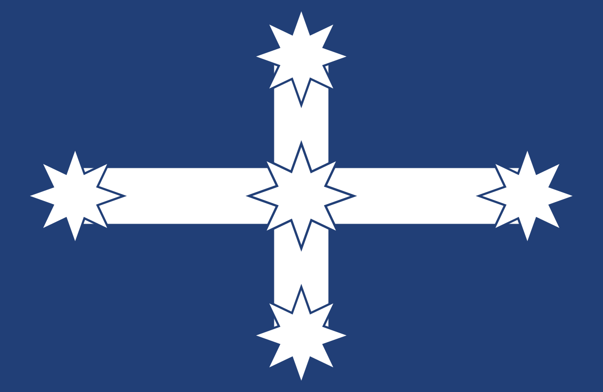
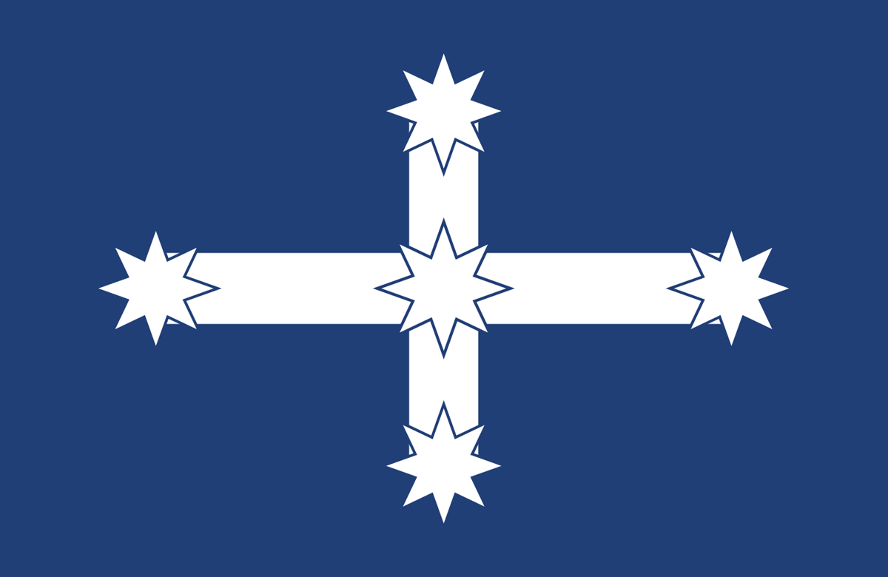
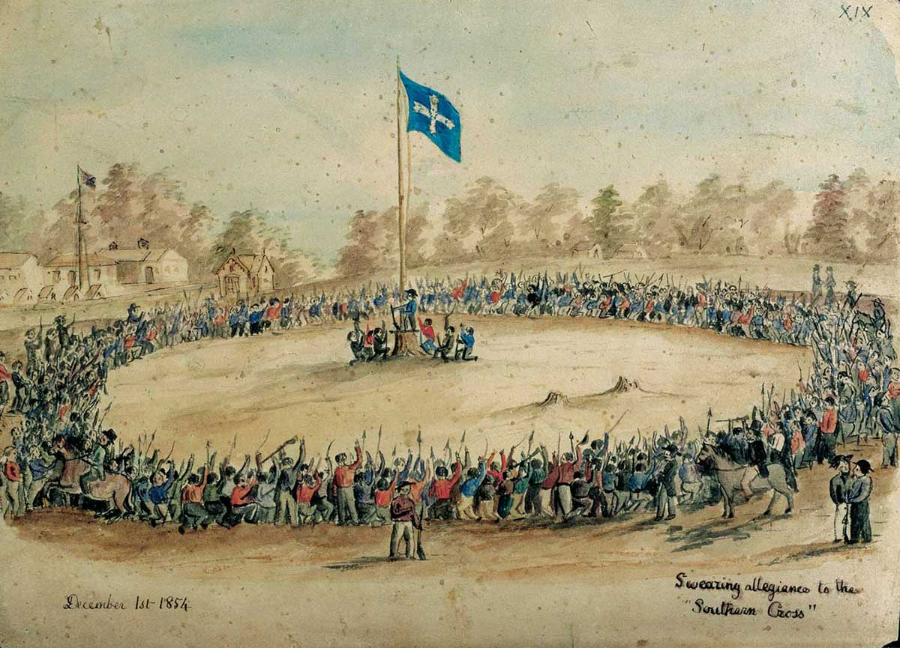
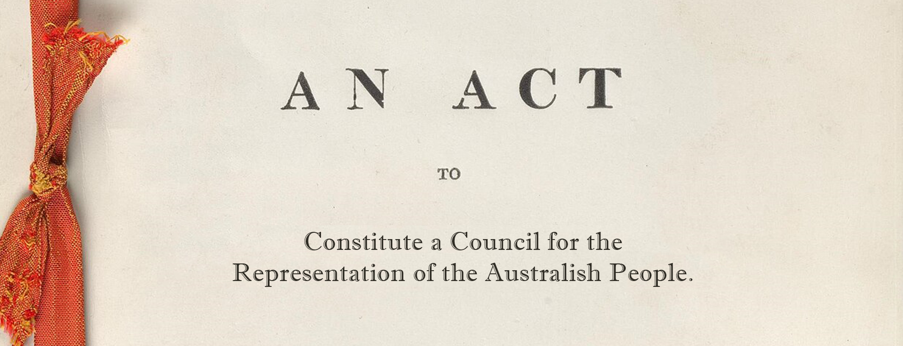

WE ACKNOWLEDGE OURSELVES.
AND SHALL BE ACKNOWLEDGED.

THE AUSTRALISH are Australia's historic ethnocultural founding people — a distinct people decended from the early British-descended settlers, who meet the recognised definition of a people in international doctrine: a shared origin, a culture grown in a specific territory, and a common civic inheritance. Through recognition this people shall be politically represented, and their continued existence shall be secured through a rights-based case for recognition and self-determination.

We seek the extention of political representation to the historic ethnocultural community that founded Australia — who are on track to become a minority in their own homeland before the end of this decade — within the constitutional framework of the Commonwealth.
Australish: the historic British and Anglo-Celtic Australians who, by Federation in 1901, made up over 98 percent of the population, and who are now only a quarter of the Australian population.
Every nation-people carries its own ethnonym, formed according to linguistic custom. In the Germanic and Romance families, the suffix -ish or its cognates mark belonging: English, Polish, Spanish. Our root is Austral-, from Terra Australis. The natural ethno-form in our language is therefore Australish. It is not an invention but a restoration of grammar and inheritance.
The Australish, the historic ethnocultural Australians, deserve to be included in the so-called multiculture. Their “nameless” state, however, reinforces the state position that they are not a people to be valued, let alone advocated for.
Aboriginal “nations” are named, funded, and formally acknowledged at every level of civic life. Migrant ethnic groups are granted advisory councils, liaison offices, multicultural programs, heritage listings, and public assurances that their identity will be preserved, celebrated, and defended from erasure. Refugees, too, are afforded institutional protection and symbolic esteem. Every identity in Australia is formally recognised — except the one that built the nation itself. When the interests of groups are tallied, theirs are not merely ignored — they are quietly placed last. Such is the power of not naming a people.
The founding Australians are the only group in this country expected to have no council, no charter, and no recognised cultural status. Their gradual disappearance is recast as a virtue — a progressive sacrifice on the altar of diversity.
The Australish are a distinct ethnocultural people, formed here in Australia between 1788 and 1950. We are not the same as post-1960s British migrants, who remain British by lineage—the “British Australians”. Nor are we simply “Australians” in the modern civic sense, a term that now includes anyone who was just granted citizenship. We descend from the colonial and Federation-era settlers of British and Irish origin who, through local birth, intermarriage, and a shared civic life, became something new — a people native to this continent in the national sense. This phenomenon is known as ethnogenesis. Our language — Australian English — our institutions — the Commonwealth, the ANZAC tradition, the code of mateship and plain speech — all gave rise to a people distinct from their European forebears. Like the Afrikaners in South Africa, the Québécois in Canada, or the Americans in their republic, we became a people of European descent, but of Australian formation.
In Australia, when recategorized in this way — as possessing a people native to the country Australia (not the continent Australia – you can be one, and not the other) — no single group holds a majority. Today, Australia has a population of 27 million. Of these, fewer than ten million were born in Australia to parents and grandparents also born here. Around ninety percent of that group trace their ancestry to the British Isles. When one removes recent British arrivals and unassimilated lines, roughly seven to eight million remain — the true Australish — amounting to little more than a quarter of the nation.
And so, by every accepted definition in law and custom, the Australish are now a minority within their own Commonwealth. And this happened without anybody even noticing it. The United Nations, through the Declaration on the Rights of Persons Belonging to National or Ethnic, Religious and Linguistic Minorities, defines a minority by three conditions:
The Australish are a distinct ethnocultural people, continuous in descent, language, and tradition. We are a numerical minority, forming barely a quarter of the population. And we are non-dominant: we have no recognition, no representative council, and no place within the official multicultural framework that protects every other group.
By these measures, the Australish are this nation’s only unrecognised minority.
The Census has no category for “Australish.” “Australian ancestry” is treated as a cultural choice, not a lineage. Thus, the founding people are rendered statistically invisible — absorbed into a label that now means everyone and therefore no one.
Projections toward mid-century confirm the pattern. By 2050, Asian Australians will likely comprise a quarter of the population and become the largest minority. The Australish will fall below twenty percent. Other European groups will shrink likewise; Indigenous numbers will remain stable. No people will hold a majority in the land once unified by one.
Under the International Covenant on Civil and Political Rights (ICCPR), to which Australia is bound, two principles govern:
Australia also endorsed the UN Declaration on the Rights of Persons Belonging to National or Ethnic, Religious and Linguistic Minorities (1992), which requires states to protect minority existence and identity and to create conditions for their cultural, religious, and linguistic development.
Domestically, the same recognition is embedded in legislation and policy. The Racial Discrimination Act 1975 (Cth) prohibits disadvantage on the basis of ethnic origin. Each state maintains a Multicultural Act or charter that funds, consults, and represents ethnic and linguistic communities: Multicultural NSW Act 2000, Multicultural Victoria Act 2011, Multicultural Queensland Charter 2016, and others. At the federal level, the Australian Multicultural Council advises government on the preservation of minority cultures.
Taken together, these instruments affirm one principle: cultural continuity is a recognised public good. They create an enforceable expectation that every historic or vulnerable community within the Commonwealth should possess institutional means to maintain its heritage.
By these same standards, the Australish are entitled to such protection. They satisfy all accepted criteria of minority status. Therefore, to withhold from the Australish the protections extended to every other minority is discrimination by omission. The right already exists in law; what is absent is its application. The remedy is to bring the founding people within the same legal and institutional frameworks that guard the continuity of every other community in Australia. But that all starts with the people rising up and declaring in one voice: we exist. We are the Australish.
UNESCO and the broader corpus of international doctrine define a people as possessing:
Each of these conditions is fulfilled by the Australish.
The founding Australians possess a clear historical memory: settlement, Federation, the ANZAC tradition, the evolution from colony to nation. They possess a shared tongue and civic temperament, a recognisable humour, accent, and folklore, a code of fairness and service, and a relationship to land that turned a colony into a homeland. Foreign observers long recognised this as a distinct ethnocultural type — the Australian in the deeper sense, not of paperwork, but of civilisation.
When a settler stock transforms into a self-conscious lineage, it becomes a people. So it was with the Quebecois in Canada, the Afrikaners in South Africa, the Scots within the United Kingdom, and many others. International law does not require that a people be indigenous to a continent, nor that it be a minority. It requires only continuity, distinctiveness, and will. By those criteria, the Australish qualify without ambiguity.
And yet in their own country they are denied that status. The founding Australians are reclassified in official language as the general population — an administrative abstraction that excludes them from every framework of self-determination, minority, or continuity protection. Under established doctrine, however, their existence as a people already stands in fact. What remains is to secure institutional recognition of that fact.
International law also recognises that erasure can occur administratively. The deliberate omission of a people’s name from public record, while other groups are formally acknowledged, constitutes a breach of internal self-determination. UN instruments caution that when a state recognises multiple peoples within its borders yet denies recognition to one of them, it risks undermining its own legitimacy as a representative authority.
That principle applies directly to Australia. The Commonwealth acknowledges Aboriginal and migrant peoples through councils, offices, and flags; it names them in ceremony and policy. It does not name the Australish. And so, they are placed last — let alone granted any special privileges (such a thing would be unthinkable). A people that names itself, records itself, and organises lawfully forces the state to address it as a people, not as a demographic. That is the beginning of self-determination — lawful, peaceful, and grounded in precedent.
What, then, are the consequences of erasure from public life?
Under Article 1 of the International Covenant on Civil and Political Rights,
“All peoples have the right of self-determination. By virtue of that right they freely determine their political status and freely pursue their economic, social, and cultural development.”
It is precisely for this reason that the founding Australians have not been permitted to exist as a named people. To recognise them would be to concede that they too possess the inherent right of self-determination — and that right, once acknowledged, carries obligations the state has long sought to avoid.
When a people lose their inheritance, history does not call it inclusion. It calls it dispossession. The record of humanity is clear: erasure need not take the form of conquest; it can occur quietly, through the instruments of administration.
In each case, the world recognised that when a founding people is deprived of name, symbol, or legal continuity, it suffers a moral injury — whether imposed by war or by bureaucracy.
Yet when the same pattern unfolds in Australia — when the Australish, the people who built and federated the Commonwealth, are stripped of flag, acknowledgment, name, charter, and institutional standing — the event is not described as cultural destruction. It is spoken of instead as diversity, inclusion, and modernisation.
If such a process were applied to the Māori in New Zealand, the Sámi in Scandinavia, the Armenians in Armenia, or the Jews in Israel, it would be condemned instantly as dispossession and moral outrage. But because the founding people of Australia are Western, unacknowledged, and without a recognised council, their gradual displacement is invisible — an erasure by silence.
The moral standard must be one and the same for all peoples. A state that denies continuity to its founders cannot claim legitimacy in the eyes of history.
Early Commonwealth records spoke of “the Australian people” — a phrase of inheritance. Now our institutions speak of “the Australian population,” of “multicultural communities” and “diverse groups within Australia.”
Erasure proceeds in five steps:
The result: every group can petition and advise, except the one that built the Commonwealth. The Australish may speak as individuals, but not as a people. Their voice is diffuse, their claims invisible.
The Australish must transition from population to people. So long as we remain unnamed, the Commonwealth may preach inclusivity while excluding its founders by omission. Any other attempts to participate in a nativist movement will fail without this precondition being met — without it, it is just LARPing, imitating the behaviours of Anglosphere nations without having done the intellectual groundwork to walk amongst them. They must restore the founding people to recognised standing so that the Commonwealth once again speaks with its founders, not merely over them.
The moral justification for this erasure is tied to the concept of terra nullius—and more specifically, to the untrue metanarrative Australia tells itself.
Australia has moved through three clear stages of political formation:
Today, however, a fourth and perilous phase is emerging: a return to practical non-ownership — a symbolic second terra nullius — in which the nation’s founding inheritance is erased beneath the language of globalism and “First Nations.” By adopting the term “First Nations,” Australia implicitly asserts that sovereign nations existed prior to the Commonwealth, recasting British settlement as occupation rather than foundation. If tribes are reframed as nations, then the Commonwealth becomes not a founding body but an occupying one. This is the core narrative weapon of our disinheritance—the moral justification for our denial of peoplehood rights and the right to self-determination. But is there any truth to it?
Under classical and modern international law — from Westphalia to the Montevideo Convention (1933) — a nation requires:
(i) a people conscious of shared identity; (ii) a common language and legal tradition; (iii) a unifying history or myth; (iv) a defined territorial homeland; (v) a collective will toward common sovereignty; and (vi) a central legal order extending over the population.
By this standard, pre-contact Aboriginal societies were kin-based and linguistically diverse, comprising more than 250 languages and over 500 systems of customary law. Anthropologists record complex local governance but no continent-wide polity or confederation. No single law, language, or sovereign will bound these communities into a nation-forming whole.
By contrast, the founding Australians brought precisely those attributes: a single language, a unified law, a developing civic mythology — the Pioneer, the Bushman, the Digger, the Convict-turned-Citizen — and, by 1901, a conscious act of Federation recognised internationally. In legal and historical fact, Australia became the first and only nation ever formed on this continent.
Australian jurisprudence remains clear. Mabo (No 2) rejected terra nullius for property purposes but reaffirmed that sovereignty resides in the Crown and is not justiciable. Coe v Commonwealth (1979) further held that no Aboriginal nation exists in Australian constitutional law. Love v Commonwealth (2020) recognised Aboriginal identity for limited constitutional interpretation but did not disturb the singular sovereignty of the Commonwealth.
International law aligns with this. Montevideo Article 1 defines statehood by permanent population, defined territory, government, and capacity for foreign relations — none of which existed in pre-contact Australia. The UN Declaration on the Rights of Indigenous Peoples (2007) affirms cultural rights but, in Article 46, explicitly preserves the territorial integrity and political unity of existing states.
It is a matter of legal fact — not opinion — that only one sovereign nation has ever been formed in Australia, the Commonwealth of Australia, and it was formed by the British-descended people who became the Australish.
In spite of it being a false claim, when a state repeatedly declares itself to stand “on First Nations land,” it implicitly asserts that the Commonwealth was not the first nation here. The ritual acknowledgment, repeated in schools and parliaments, establishes a hierarchy: those named first are assumed to be the original sovereigns; those unnamed appear as guests. This is a major instantiation of the metanarrative leading to erasure of the Australish people by administration.
This practice is not mere courtesy; it is jurisdictional symbolism. Children raised hearing that “Australia sits on First Nations land” will naturally assume that their own ancestors built a state upon another’s sovereignty — that they are inheritors of a wrong rather than of a nation. Such framing cannot coexist with civic confidence or historical truth.
This is not accidental language; it is deliberate. Over time, the ceremony has become embedded in official protocol, repeated in schools, parliaments, and public institutions. It acknowledges land custodianship claims but not the act of nation formation itself.
The solution is simple: speak the full record.
“We acknowledge the Australish — the living founders of this nation — who built the Commonwealth upon which all our institutions stand.”
Such recognition restores balance. It does not erase others; it corrects omission. It affirms that this nation was indeed founded; that the people who gave it law, language, and unity still exist; and that they, too, are owed continuity and respect.
The ritual must speak for all who have built this country, not only for those who predated it. Recognition begins in language, and language, once set right, restores the moral order of the Commonwealth.
Another major instantiation relates to the flag. The symbols a state adopts determine, in the eyes of its people, who is seen and who is forgotten. Flags are not decoration; they are declarations of standing.
In 1995, under Commonwealth Gazette No. S297, the Aboriginal and Torres Strait Islander flags were formally proclaimed as Flags of Australia pursuant to Section 5 of the Flags Act 1953. This was done by executive proclamation — without referendum, without parliamentary debate, and without formal consultation with the citizenry. From that day forward, the Commonwealth officially recognised three banners in civic space:
Thus, two defined ethnic identities acquired state-sanctioned symbols, while the founding people who built the Commonwealth — the Australish — were granted none.
In comparative perspective, this is extraordinary. No other nation has elevated minority banners to equal legal standing while withholding recognition from its founding majority. Japan does not raise the Ainu flag alongside the Hinomaru; Israel does not fly Bedouin or Druze flags as co-equal national emblems; neither Poland, Hungary, nor the United States has established ethnic flags as “national” symbols. Australia stands alone in having symbolically enthroned minorities while erasing its founding ethnos from representation.
No formal recognition exists for a Flag of the Australish, though one emblem already embodies that heritage — the Eureka Standard. That flag, born at Ballarat and carried by the early settler stock in defence of liberty and justice, represents the ethos from which the nation was forged. Its use remains unofficial, and at times prohibited by policy.
This is the doctrine of symbolic disinheritance: when a people loses its banner, it loses its recognised presence. The restoration to a truthful metanarrative that informs policy must begin here — with acknowledgment in emblem, so that every child who looks upon the flags of the Commonwealth may once again see the people who built it.
The matter extends beyond any overarching narrative. Many Australians would struggle to imagine a civic order in which the following measures existed for the preservation and dignity of the Australish native people:
In modern Australia, the very idea of it is repugnant. And yet, I ask you, what is the alternative?
No spontaneous correction will come. The administrative order is designed to proceed without us, confident that no recognised body stands to object.
Two paths remain:
Once a people possesses institutional form, silence can no longer be mistaken for absence. The State must choose whether to acknowledge or to suppress. That choice — once made visible — marks the first step toward restoration.
No people in history has ever been recognised before it moved in its own name. Recognition follows declaration, and declaration must be made by the people themselves.
The Québécois in Canada ceased calling themselves “French Canadians” and declared a distinct people. The Basques, Catalans, Sámi, Flemish, and Romansh each formed councils, parliaments, or language boards to assert continuity within their states. The Scots and Welsh rebuilt devolved assemblies to restore historic standing. In the wider world, the Māori created iwi councils and the Māori Parliament long before formal recognition. The Afrikaners founded the Broederbond and later cultural institutions to preserve language and heritage. The Ainu of Japan, Tamils, Tibetans, and Armenians petitioned for recognition as enduring peoples within larger sovereignties. The Assyrians, Kurds, and Yazidis have done the same across the Middle East, as have the Frisians, Bretons, and Corsicans in Europe.
From every continent the same pattern holds:
The Australish now follow this universal pattern. Every other group in Australia is encouraged to maintain ethnic consciousness — Aboriginal, Greek, Italian, Lebanese, Chinese, Sikh. Each is praised for doing so. Only the founders are told to have none at all, to dissolve into a generic Australian as that label expands to include all others.
That is how a people vanishes in the modern age — by being administratively managed out of existence. The answer is not protest but form. Recognition must be reclaimed by the same lawful means through which others secured theirs via international and domestic doctrine: the right of self-determination, and the right of minority protection. Neither are possible without the will of the people – it starts with a discussion, that will undoubtably be met with animus. Hold the line, and hold on to who you are as a people. The principled position will win out in the end, but without the clear understanding of who the Australish are and why they deserve protection and rights nothing can be accomplished.
The progressive left speaks of “diversity,” “equity,” and “inclusion,” yet practises selective favouritism — elevating chosen groups as symbols of virtue while declaring war on the cultural inheritance of the founding people with guilt, bureaucracy, and the slow violence of narrative control. Its worldview has become Manichaean — the perpetual “us” and “them.” Within this moral theatre, the Australish are cast as the hereditary villains, condemned for the very civilisation they built.
Its moral economy depends on a permanent imbalance — celebrated minorities and contrite majorities — but that equilibrium has already collapsed. Mass immigration has dissolved the very majority upon which its politics of guilt depends. When everyone becomes a minority, the currency of victimhood loses value, and the hierarchy built to wield moral power will implode under its own arithmetic. Through their own success, the left have lost their moral authority—though they continue to hold the narrative, regardless of its falsehoods.
The right wing has passion but no architecture. When it acts, it does so with such political clumsiness that it hands victory to its opponents. Its rebellion shouts against the system, yet never strikes the structure. The populist impulse channels real frustration, but it remains reactive. Without a moral wedge — the kind the left wielded with great success for half a century — populism becomes mere protest: loud, momentary, and easily absorbed by the very establishment it opposes. Its patriotic approach, still common among the grassroots, has been hollowed into loyalty to a legal jurisdiction open to all, a multicultural Australia that anyone may join through paperwork. Integrationism fares no better: it invites others to join a culture that is no longer accessible, while retaining everything about themselves while recreating their countries of origin on foreign soil.
The reigning orthodoxy of both left and right claims that every passport holder is equal in cultural and political standing to the descendants of those who built the nation. In doing so, it concedes the premise of dispossession: that Australia belongs to no particular people. If “Australian” is undefined beyond paperwork, then there is no people to defend, no continuity to preserve, and no lawful claim to inheritance. This creed has hardened into the universal slogan, “for all Australians.” It is repeated everywhere — by populists, patriots, and progressives alike. In practice, it means for everyone but the founders.
The phrase for all Australians sounds generous but functions as camouflage. It hides the quiet fact that some identities will be preserved, others celebrated, and one — the founding one — politely omitted. Those who speak of “all” rarely say they are for us. They have councils, festivals, and institutions that honour their heritage. When the founders ask for the same, they are told it is divisive.
I say be for the Australish — and through that centre, all others may find their rightful place. The war will be won by restoring the axis around which all else can turn. England recovered its confidence not by saying it was “for all British,” and waving the British flag, but by remembering that England is for the English, and waving the St Georges Cross. Australia will not be whole until its founding people are named, respected, and represented. Do not fear that such truth will estrange allies — it will draw to you the honest and the just. When a cause is rooted in truth, the righteous rally to it. This is not exclusion — it is restoration. The proper moral order begins when each stands where history placed them, and when those who built the nation are again acknowledged as its living foundation.
First, name the people. Speak plainly of the Australish as a distinct ethnocultural nation within the Commonwealth. Affirms that this people, like all others recognised under international doctrine, holds the inherent right to exist, to be recognised, minority rights, and to exercise political agency within the law.
That shifts the ground from protest to principle. It ceases to plead for fairness and instead asserts standing: we are a people with rights. The system can ignore sentiment, but it cannot indefinitely deny a lawful claim once defined. This approach cannot be co-opted, because its foundation is precise and verifiable — lineage, record, and continuity. It applies the same moral logic that underpins Aboriginal and First Nations advocacy, yet returns that logic to the people who built the nation itself.
To do this is to restore a centre of gravity. Australia today is a managerial state — a service apparatus without declared heirs, balancing the moral authority of Aboriginal symbolism against the demographic arithmetic of global immigration. Recognising the Australish restores that lost anchor — the point around which all others may orbit in balance. This does not diminish minorities; it grants them a stable host culture into which they may integrate at sustainable levels. It reinstates the lawful hierarchy of belonging that every enduring civilisation requires: a core inheritance that welcomes others without ceasing to be itself.
The Commonwealth’s institutions were built by the Australish. They function best when the spirit that created them is honoured. This is the necessary vanguard for any movement that seeks to build a culturally coherent Australish Australia — or at minimum, to ensure such places endure within the country as a whole.
The recognition of the Australish, their attainment of minority protections, and the shift in metanarrative this would facilitate, also re-opens what has long proven politically impossible: the moral and legal ground to reform demographic policy. For the past fifteen years, based on the top source countries for permanent migrants to Australia, the country has become progressively more like Asia, Africa, and the Middle East—and as a result, less like the nation the Australish founded. If things continue, that is the future of Australia—this is not commentary, it is statistical fact. For three decades, the political right has lamented the transformation of the nation yet failed to reverse it — because it dared pursue the interests of the people whose continuity was at stake. Once the Australish are acknowledged as a historic people, population policy becomes not a question of economics but of national duty — the duty of the Commonwealth to its founders. Recognition of the Australish would not abolish multiculturalism; it would order it — transforming a flat ideology into a structured harmony of identities beneath a primary nation. It would allow those who come here to honour the host people, rather than dissolve them. If this is a scenario that most Aussies would like, they must support our cause, for I foresee no other pathway to this reality—the political, legal, cultural, and economic barries are quite simply too formidable.
The right has spent decades on the defensive — reactive, fragmented, and mocked. It lost the moral high ground because it spoke only of resentment and economy, never of inheritance or duty. When the language of duty and inheritance returns, the cause ceases to sound like reaction and begins to sound like restoration. The left, for its part, has committed the opposite failure. Where the right forgot duty, the left forgot reality. It denied that demographic transformation had consequence, treating population as arithmetic and culture as costume. Worse, it practised a politics of favouritism — elevating chosen ethnicities as symbols of virtue while casting the founding people as a moral stain upon the nation they built. Under its rule, the Aboriginal cause became a theatre for absolution, migrant identity a badge of innocence, and the historic Australians the convenient villain in every national story. It mistook perpetual change for progress—regardless of the rationale, all agree that progress has not been achieved. That “things are shit now”.
The Australish path proposes a renewed constitutional settlement within the Commonwealth — one in which the founding people are again named, respected, and protected. Such recognition permits the rebirth of institutions, festivals, scholarships, and civic symbols that honour the living heritage of the Australish — a culture of contribution to be proud of. Most importantly, it opens up the possibility of an Australia not as it was, but as it could have been where the experiment of mass immigration not forced on us against our will, and to our detriment above all others. An Australia growing less, not more, like Asia, Africa, and the Middle East, and more like us, the Australish, and with our symbols and heritage acknowledged. The return of the axis—at best nationally, should ambitious policies like remigration ever substantiate (unlikely, but who knows), or at worst in areas under our custodianship. Recognition of the Australish would not halt change, but it would give the nation the right to decide what kind of change occurs. When the character of a population shifts, it inevitably becomes more like some things and less like others. That is not an insult—it is description. Recognition would allow those decisions to be made deliberately, because only when the founding people are acknowledged in law can population policy include their continuity as a legitimate national interest.
We must make a the argument, far and wide. Declare that the builders of the Commonwealth are a distinct ethnocultural people under international law. Affirm that we meet every recognised criterion of peoplehood: a shared history, culture, descent, homeland, and collective will to endure. State that our right to self-determination is inherent under the very covenants the Commonwealth already upholds. Further affirm that, as a recognised minority within the Commonwealth, the Australish also hold the concurrent right to continuity and cultural protection under Article 27 of the International Covenant on Civil and Political Rights. This is the moral and legal foundation for everything that follows.
Every civilisation has an axis — a point of moral and cultural gravity around which all else revolves. When that axis stands firm, the world around it finds balance. When it falls, confusion reigns. Australia’s axis was once clear. The Australish stood at its centre: a people bound by shared labour, speech, and memory, whose confidence drew others into their orbit. Those who came here did not despise that centre — they were drawn to it. They saw a people who knew who they were, and in that clarity they found belonging. Today, that axis has been deliberately removed. We stand upon two concurrent streams of right: self-determination, the power of initiative; and minority protection, the power of endurance. Our aim is parity: that the founding people of the Commonwealth be accorded the same institutional standing already extended to Aboriginal, migrant, and minority communities.
We act so that those yet unborn may inherit name, memory, and home. For we have no other homeland.
We seek to restore the moral and legal covenant between the Commonwealth and its first civic people. We will pursue this through lawful endurance alone: by record, by petition, by persistence.
From this point onward, the founding people of the Commonwealth are once again a living presence in civic life. We have reclaimed the right to speak, to organise, and to endure.
To the Australish — the heirs of the Commonwealth — enter your name into record, that you may never again be erased from it. And realise the promise of the Australish people.
So let it be written that in this late hour — when the law had forgotten us, when our elites turned against us, when the axis had fallen — the Australish stood once more and reclaimed the centre.
We stand as one people — the Australish — and soon the Commonwealth shall find its balance again.
We act in inheritance. We act for survival. We will not fade away, in culture and people, our memory sullied in our absence. We shall go on till the end. In the words of Australish legend Banjo Patterson: “The changes in our life must come from the impossibility to live otherwise than according to the demands of our conscience.”
Conscience demands that we endure.
We acknowledge ourselves. And we shall be acknowledged.
Speech to the First Fleet Forum, October 2025 (edited for print)
Under Article 1 of the International Covenant on Civil and Political Rights, to which the Commonwealth of Australia is a signatory, all peoples possess the right to self-determination. This right does not originate from the state but from peoplehood itself. The Australish, being a historic ethnocultural people formed on this soil, therefore assert their right to representation and cultural continuity under this principle.
Australia may have one citizenship, but it does not follow that it has only one people. As seen in Canada, South Africa, or the United Kingdom, a single state can lawfully contain multiple historic peoples, all sharing citizenship while maintaining distinct inherited identities. “Australian” is a civic category — a multicultural legal status open to any person granted citizenship, regardless of ancestry or culture. A person may hold Australian citizenship while possessing only the language, customs, and identity of their ethnic people, and this does not affect how "Australian" they are. By contrast, “Australish” is not a civic status but an ethnocultural one, inherited through descent from the founding settler population. If every Australish citizen were removed from Australia, and the population that remained still held Australian citizenship, the country would be just as Australian as it ever was. This illustrates how “Australian” is a civic identity, while “Australish” names an ethnocultural people — one whose existence is not guaranteed simply by the maintenance of the state.

The Eureka Rebellion — when Australish men first raised a flag in rebellion against rule without representation. Today, unauthorised public use of that same flag is prohibited under Federal Court order, while no such prohibition applies to the Aboriginal or Torres Strait Islander flags.
The Australish people — as with any people — cannot be represented until they are recognised in law. If no formal body exists, then legally the Australish people do not exist — and what does not exist cannot be represented. Without legal recognition, their interests cannot be heard, and without representation, their decline proceeds without objection or record until culminating in erasure. Recognition grants standing — the status required to be considered in law, to enter public record, to petition formally, and to secure priority in decisions that distribute power and resources. Without standing, a people will be excluded entirely from consideration in every institutional decision — which is the current state of affairs.
To gain that standing, a people must first speak through an institution that can be recognised in law. For that reason, we have prepared the Australish Declaration, a founding charter of intent to begin the establishment of the Australish Rights Council — a civic body grounded in treasury, ledger, and defined milestones, so that representation for the native founding population of Australia begins not as sentiment but as structure.

The Australish people stand today without recognition in the Commonwealth they founded. A people unrecognised is a people already being erased.
THE AUSTRALISH DECLARATION marks the moment a people organises itself and hereby founds the Australish Rights Council — first as a civic body grounded in treasury, ledger, and witness, and in time to be established as a statutory body in Commonwealth law. This Charter of Intent sets the ordered path by which a people passes from sentiment to structure, from private conviction to representation, from scattered voices to a recognised Council able to stand in law and in public record. Power in the Commonwealth is exercised according to established norms. mechanisms. Sentiment, protest, activism, and even a voting majority, without institutional form, do not enter those mechanisms. Only through deliberate navigation of recognised structures can a people take part in the processes by which representation and authority are allocated. Put simply: the system has rules, and only those who organise according to them are heard by it.
In issuing this Declaration, the Australish people form their Council in principle. Even before any law is passed, such a Council carries real authority — because a people who organise, keep a ledger, and hold a treasury are already exercising representation. The long-term objective is statutory recognition: that a future Act to Constitute the Australish Rights Council would recognise it in Commonwealth law as a permanent representative institution empowered to speak in public record and authority on behalf of the Australish people.
The Council’s Operational Directive accompanies this Declaration as its working instrument — setting out the staged goals, mechanisms, and institutional milestones by which the Declaration passes from proclamation to established authority.